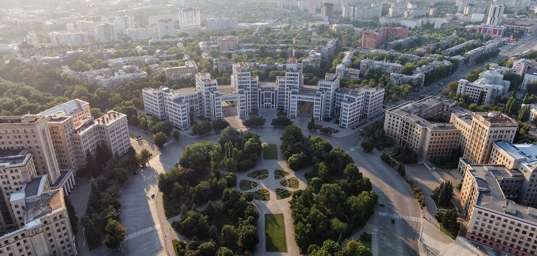

Харьков - второй по численности населения город Украины, научный центр Украины, центр Харьковской области. Единственный город Украины, обладающий полным комплектом наград Совета Европы: Дипломом, Почётным Флагом, Таблицей Европы и Призом Европы Во времена СССР был крупнейшим центром танко-, тракторо-, турбиностроения и третьим по величине индустриальным, научным и транспортным центром после Москвы и Ленинграда. Во второй половине XX века — главный транспортный узел Юго-Восточной Европы. Крупнейшие предприятия 1) ГП Харьковский завод транспортного машиностроения имени В. А. Малышева 2) ГП Завод Электротяжмаш 3) ПАО Хартрон 4) ГП Харьковский электромеханический завод 5) ЗАО Завод Южкабель 6) ХАРП (Харьковский подшипниковый завод) 7)ОАО Турбоатом 8) ОАО Харьковский тракторный завод (ХТЗ) 9) ГП Харьковский приборостроительный завод имени Т. Г. Шевченко (ХПЗ) 10) Харьковский велосипедный завод имени Г. И. Петровского (ХВЗ) 11) ХАЗ — Харьковский авиационный завод 12) Харьковский машиностроительный завод «ФЭД» 13) ГНПО «Объединение "Коммунар" 14) ГП МОУ «Харьковский автомобильный ремонтный завод № 126»
Современный Харьков — один из крупнейших транспортных узлов страны (железные и шоссейные дороги, международный аэропорт). В городе действует разветвлённая сеть уличного общественного транспорта: маршрутных такси, автобусов, троллейбусов, трамваев. Метро: С 1975 года действует метрополитен, состоящий из 3 линий, общая длина 39,6 км. Строительство метро продвигается медленно и не постоянно. Последняя станция на Алексеевской линии метро в северном направлении — «Победа» строилась с начала 1990х по 2016 год (открыта для пассажиров с 25.08.16), несколько раз строительство замораживалось. На различных схемах харьковского метрополитена есть перспективные станции во всех направлениях, и даже перспективные новые линии. К примеру от станции «Академика Барабашова» по направлению просп. Юбилейного отходит ветка из трёх станций, но такое строительство маловероятно в виду невостребованости, троллейбусы и маршрутки справляются с нагрузкой. От станции «Героев Труда» Салтовской ветки до станции «Индустриальная» Холодногорско — Заводской ветки метро на схемах проходит перспективная линия через весь салтовский жилмассив. В целом общественный транспорт постепенно теряет количество маршрутов, уменьшается доля электротранспорта, особенно трамвая, количество маршрутов которого уменьшилось более чем вдвое.
Железнодорожный транспорт Малая Южная железная дорога Харьковский метрополитен Харьковский аэропорт Харьковская канатная дорога Харьковский трамвай Харьковский троллейбус Харьковский автобус